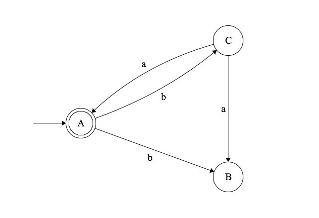
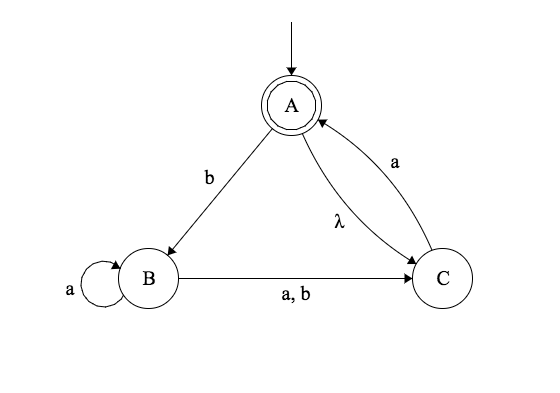
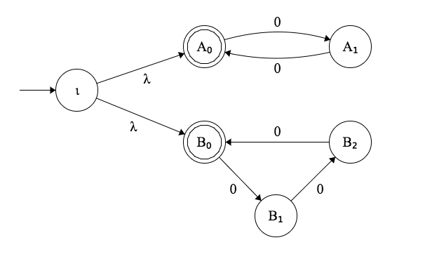

Julien Marcil - julien.marcil@ift.ulaval.ca
Définition: Un langage est dit régulier s’il existe un automate fini déterministe qui le reconnaît.
Une façon de montrer qu’un langage est régulier est de construire un automate qui reconnaît ce langage.
Définition: Un automate fini déterministe consiste en un quintuple de la forme $(S, \Sigma, \delta, \iota, F)$ où
Soit les languages $A$ et $B$. Nous définissons les opérations suivantes:
L'ensemble des languages réguliers est fermé sur les opérations: Union, Concaténation et Étoile.
Définition: Un automate fini non déterministe consiste en un quintuple de la forme $(S, \Sigma, \delta, \iota, F)$ où
Définition: L’automate fini non déterministe $M = (S, \Sigma, \delta, \iota, F)$ accepte (ou reconnaît) la séquence $x = x_1x_2x_3\dots x_n$ (où $s_i \in \Sigma$) si et seulement si il existe une séquence d’états $s_0, s_1, s_2, \dots, s_n$ (où $s_i \in S$) tels que $$\iota = s_0$$ et $$\forall_{j=1,\dots,n} \ s_j \in \delta(s_{j-1}, x_j)$$ et $$ s_n \in F $$
Dans le cas contraire, on dit que l’automate rejette la séquence.
Pour tout automate fini non déterministe, il existe un automate fini déterministe qui accepte exactement le même langage.
Constuire de l’automate fini déterministe équivalent au diagramme de transisition suivant
On n’augmente donc pas la puissance des automates finis en permettant le non déterminisme.
Par conséquent, on peut dire qu’un langage est régulier si il est reconnu par un automate fini non déterministe.
Les automates finis non déterministe ont une représentation plus simple.
Il est aussi possible de faire des transitions sur $\lambda$. Par example:


Définition: Un automate fini non déterministe consiste en un quintuple de la forme $(S, \Sigma, \delta, \iota, F)$ où
où $\Sigma_\lambda = \Sigma \cup \{\lambda\}$
L'ensemble des languages réguliers est fermé sur les opérations: Union, Concaténation et Étoile.
Soit $L = \{b^mab^n \mid m \in \mathbb N^+, n \in \mathbb N\}$. Il est possible de décomposer $L$ en utilisant les opérations: Union, Concaténation et Étoile.
$$ L = \{a\} \circ \{a\}^* \circ \{b\} \circ \{a\}^* $$
En simplifiant, il est possible d'écrire
$$aa^*ba^*$$
Définition: $R$ est une expression régulière si $R$ est:
Note: Cette dénition est de nature récursive.
L'opération de concaténation est associative. Pour tous les langages $L_1$, $L_2$, $L_3$:
$$ L_1 \circ (L2 \circ L3) = (L1 \circ L2) \circ L3 $$
Par conséquent si $r_1$, $r_2$, $r_3$ sont des expressions régulières alors les expressions régulières $r_1 \circ (r_2 \circ r_3)$ et $(r_1 \circ r_2) \circ r_3$ représentent le même langage.
Pour alléger la notation, on écrira $r_1r_2$ plutôt que $r_1 \circ r_2$. Donc
$$ \begin{align} r_1r_2r_3 = & r_1 \circ r_2 \circ r_3 \\ & r_1 \circ (r_2 \circ r_3) \\ & (r_1 \circ r_2) \circ r_3 \\ \end{align} $$
L'opération d'union est associative. Pour tous les langages $L_1$, $L_2$, $L_3$:
$$ L_1 \cup (L2 \cup L3) = (L1 \cup L2) \cup L3 $$
Par conséquent si $r_1$, $r_2$, $r_3$ sont des expressions régulières alors les expressions régulières $r_1 \cup (r_2 \cup r_3)$ et $(r_1 \cup r_2) \cup r_3$ représentent le même langage:
$$r_1 \cup r_2 \cup r_3$$
Définition: Soit une expression régulière $R$ et un alphabet $\Sigma$. Le language repésenté par $R$ noté $L(R)$, est défini par les propostions récursive suivantes:
| $(ab)^*$ | représente | $\{\lambda, ab, abab, \dots \}$ |
| $ab^*$ | représente | $\{a, ab, abb, abbb, \dots \}$ |
| $a \cup bc$ | représente | $\{a, bc\}$ |
| $(a \cup b)c$ | représente | $\{ac, bc\}$ |
| $ab \cup bc$ | représente | $\{ab, bc\}$ |
| $a(b \cup b)c$ | représente | $\{abc\}$ |
| $(a \cup \lambda)b^*$ | représente | $\{ab^n~\text{ou}~b^n \mid n \in \mathbb N \}$ |
| $(a \cup \lambda)(b \cup \lambda)$ | représente | $\{\lambda, a, b, ab\}$ |
| $a^* \emptyset$ | représente | $\{\}$ |
| $\emptyset^*$ | représente | $\{\lambda\}$ |
Soit un alphabet $\Sigma$. Les langages réguliers sur $\Sigma$ sont précisément les langages représentables par les expressions régulières sur $\Sigma$.
La démonstration se divise en deux parties:
On voit qu’une expression régulière représente toujours un langage régulier, puisque
Définition: